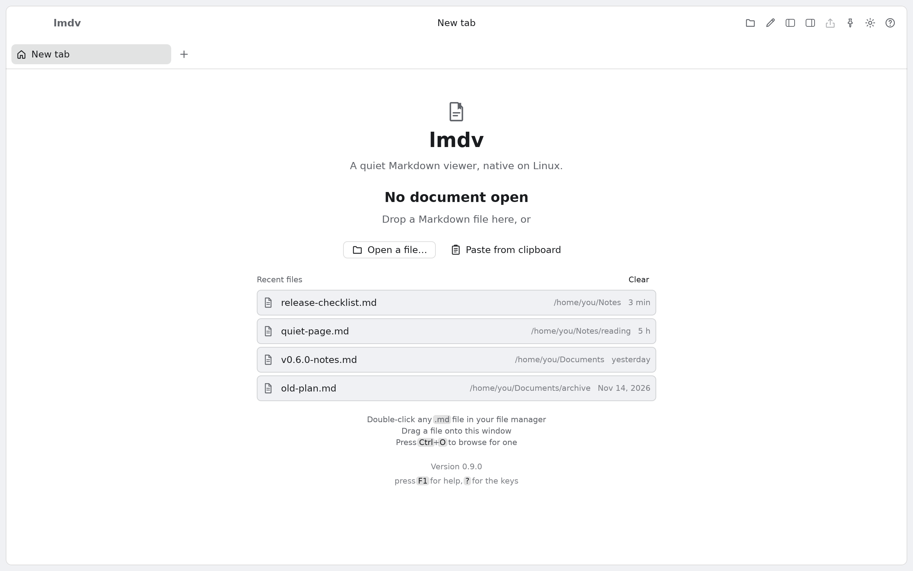
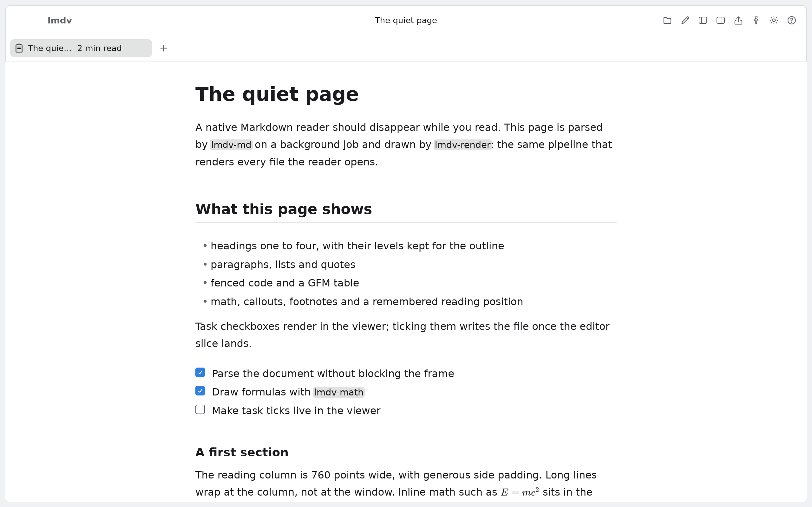
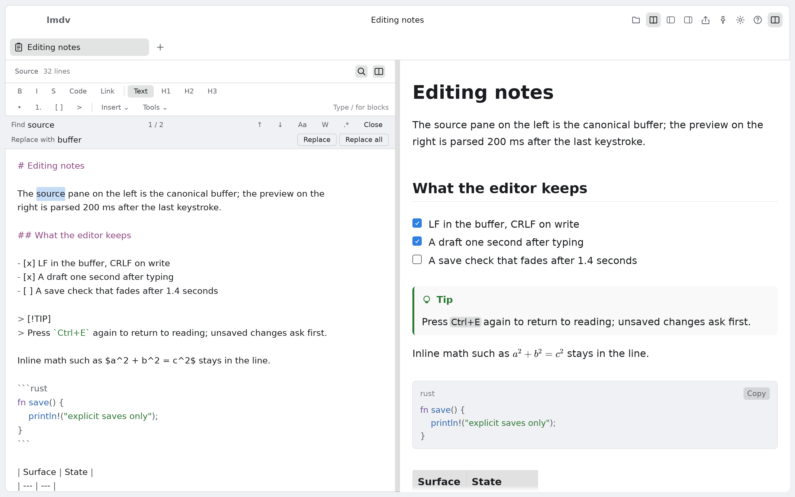

Native by design
Rune's renderer, text layout and widgets. No embedded browser, no Electron, no HTML shell — just a fast native window.
Native Markdown, not a webview
lmdv is a native viewer and editor for Linux and Windows. GitHub-flavored Markdown, math, tables and diagrams; tabs and reading positions that stay where you left them.
Linux AppImage · Windows installer · MIT · no telemetry

What it is
Rune's renderer, text layout and widgets. No embedded browser, no Electron, no HTML shell — just a fast native window.
GFM tables with sticky headers, task lists, callouts, footnotes, syntax-highlighted code, KaTeX math and Mermaid diagrams.
A source editor with live preview, format bar, block mode for large files, drafts and a real undo history. Save is always explicit.
Open several documents, keep each tab's scroll, find state and outline filter, and return to the same place after a restart.
No telemetry and no runtime network calls. Links open in your browser only when you click them; images resolve from the document's folder.
English, Italian, German, French, Spanish and Chinese, with localized keys, dates, menus and help.
Linux
A single executable that runs on most distributions. The raw binary is beside it.
Windows
A per-user install with a Start Menu entry and optional Markdown association. A raw .exe is also published.
Windows is installer-built and compile-checked; runtime support is still being verified. Linux is the primary target.
A look inside


Under the hood
lmdv uses a pinned, patched Rune workspace for its native renderer, text layout and widgets. Documents are Markdown files on disk; state is small JSON in the XDG directories. The project is MIT licensed and the full source is on GitHub.